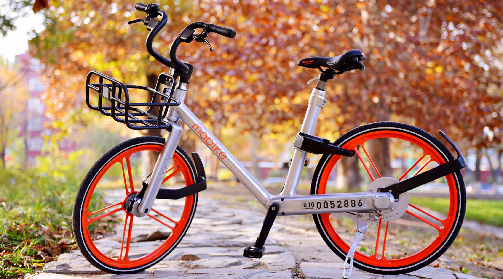

摩拜单车 上海, Author at Mobike
mobike blog
今天起，再也没有大长腿和小短腿之分
作者：摩拜单车 上海 发布时间：2016年11月16日 今天，上海和北京，京沪两地同步举行了一场发布会。 作为一个没什么预算的公司，开发布会这种规格的一 […]
阅读全文 →
Join Us
近期文章
三次升级后，我骑着比风还轻快 2016年11月16日
今天起，再也没有大长腿和小短腿之分 2016年11月16日
十位美国议员来北京参观摩拜总部 2016年11月15日
已到漠河，我可不是来瞎晃悠搞旅游的 2016年11月3日
【摩拜发问】邀你回答：无车日有什么实际意义？
作者：摩拜单车 上海 发布时间：2016年11月16日如果你去知乎上搜索“无车日”，会发现“无车日有何实际意义”早在 2014 年就有人提出，1000 多个人关注过 […]
阅读全文 →【深耕上海】摩拜的外交发展史
作者：摩拜单车 上海 发布时间：2016年11月16日6 月 24 日，上海杨浦区作为全国首个政企合作方，与摩拜单车签署战略合作协议。 7 月 11 日，市交通委主 […]
阅读全文 →100个「骑」士 | 摩拜激发的「黄金猎人」已在行动
作者：摩拜单车 上海 发布时间：2016年11月16日
姓名：庄骥 职业：上海当代艺术博物馆市场部主管 摩拜绰号：黄金猎人，了望狗 知道庄骥，是因为每天微信后台都会收 […]
阅读全文 →100个「骑」士 | 他是政府工作人员，他也是个粉丝
作者：摩拜单车 上海 发布时间：2016年11月16日7 月底的时候，摩拜推荐停车点在南京东路街道的催促和支持下全部竣工落成，在沟通过程中，得知有个政府工作人员是我 […]
阅读全文 →100个「骑」士 | 不骑单车的骑士
作者：摩拜单车 上海 发布时间：2016年11月16日
在满屏幕举报违停的报障信息里，有一个名字成功地引起了我们的注意：贺祖成。 他的每次举报都是接连在一起，且大部分 […]
阅读全文 →100个「骑」士 |「就算失败了，这也是一项公益」
作者：摩拜单车 上海 发布时间：2016年11月16日我们一直在报道作为用户的你们，是多么的热爱摩拜。 今天，我们也想讲一讲自己的故事，跟情怀无关，与梦想有关。 创 […]
阅读全文 →